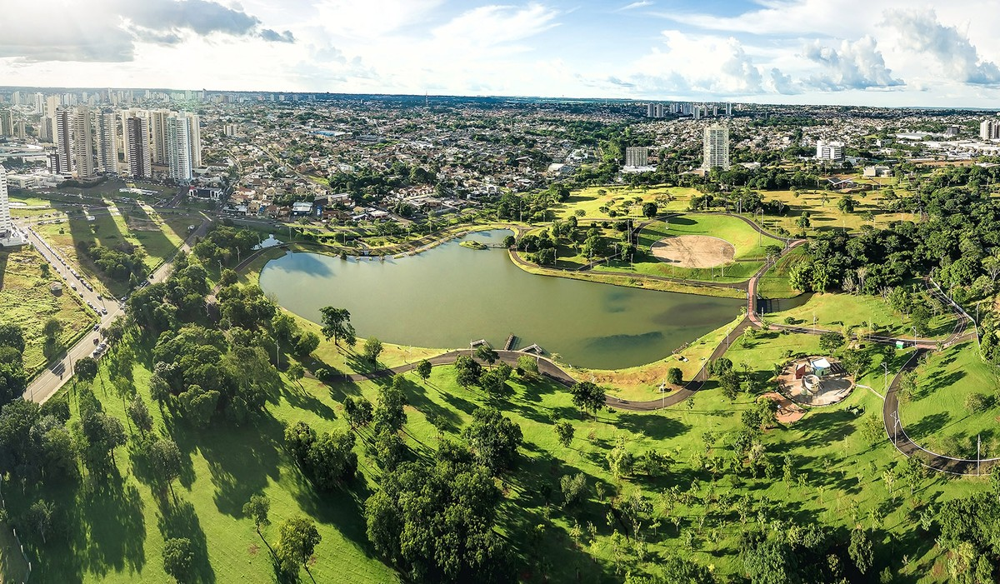
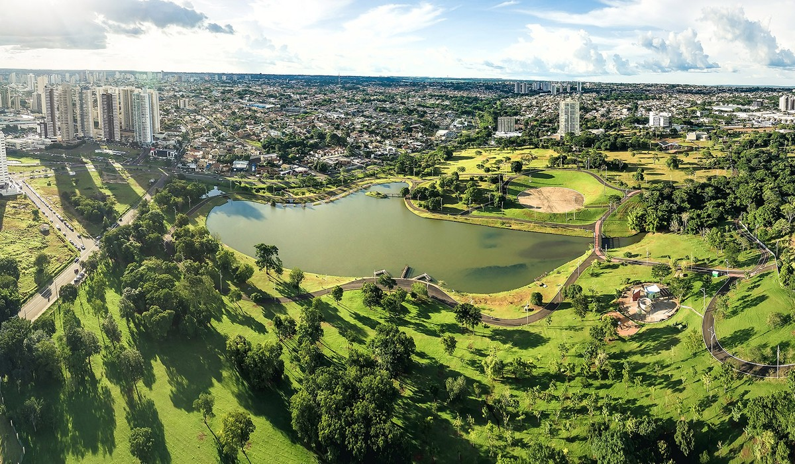

Projetos

Projeto 1: Agricultura Sustentável
Este projeto foca em práticas agrícolas que preservam o meio ambiente, promovendo o uso responsável dos recursos naturais e garantindo a produtividade a longo prazo.

Projeto 2: Educação Rural
Oferecemos cursos e workshops para capacitar agricultores e suas famílias, aumentando suas habilidades e conhecimentos para enfrentar os desafios do campo moderno.

Projeto 3: Conexão Campo-Cidade
Facilitamos a conexão entre produtores rurais e consumidores urbanos, promovendo feiras, mercados e plataformas online para a venda direta de produtos agrícolas.
 
